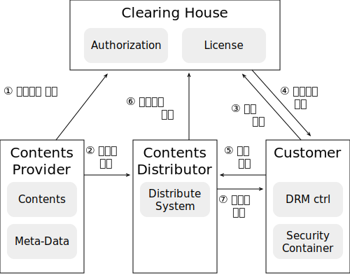
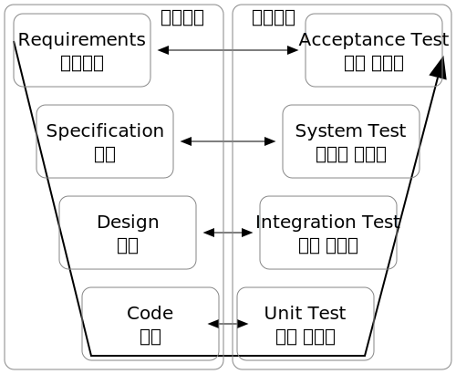

소프트웨어 개발
입출력 구현
자료구조
트리구조
"tree.svg", iseohyun.com, 2024, CC BY-SA 4.0
-
Linear Structure(선형 구조)
- Array(배열): 동일한 기본 자료형 나열
-
Linear List(선형 리스트)
- Contiguous List(연속 리스트): 동일한 자료형 나열
- Linked List(연결 리스트): 포인터를 포함한 나열(부피 증가, 다음 찾기가 빠름)
- Stack: LIFO(Last in, First out), 바구니에 쌓는 방식
- Queue: FIFO(First in, First out), 순차처리
- Deque: 양방형 Queue 처리
-
Non-Linear Structure(비선형)
-
Tree: 하나의 부모로 시작하여, 여러 개의 가지를 갖는 방식으로 저장
- Preorder(전행): A → B(전) → C
- Inorder(중위): B → A(중) → C
- Postorder(후행): B → C(후) → A
- Degree(차수): 부모가 가질 수 있는 최대의 자식 수
- Terminal Node(말단 노드): 자식이 없는 노드
- Graph: Tree + 사이클 구조(순환 참조), 정점: 객체, 간선:연결(단방향, 2정점은 최대 2간선 가능(왕복))
-
Tree: 하나의 부모로 시작하여, 여러 개의 가지를 갖는 방식으로 저장
| 상황 | 중위 | 전위 | 후위 |
|---|---|---|---|
| A + B | + A B | A B + | |
| A + (B * C) = A + □ |
+ A * B C = + A (* B C) = + A □ |
A B C * + = A (B C *) + = A □ + |
정렬
-
Insertion Sort(삽입 정렬): 2번부터(~끝) 가장 작은 수를 앞으로
-
Shell Sort: 삽입과 동일한 알고리즘 + 건너뛰면서 검증
-
Selection Sort(선택 정렬): 최솟값을 찾아 1번 자리에, 두 번째로 작은 값을 찾아 2번째 자리에...
-
Bubble Sort(거품 정렬):
1회 정렬: 가장 큰 것이 맨 뒤, 2회 정렬: 2번째 큰 것이 뒤에서 2 번째 자리...
-
Quick Sort: 재귀적으로 호출(분할과 정복),
나보다 작은 모임 + 나 + 나보다 큰 모임으로 계속 쪼갬 -
Heap Sort: 최악=평균 O(n log2n)
1: 모든 트리에 대해 제일 큰 놈을 부모로 만듦, 2:제일 큰 놈을 뒤로 옮기고, 결승만 진행 -
Merge Sort(합병 정렬): 작게 쪼개서 정렬을 하고, 정렬된 리스트끼리 정렬을 수행한다.
-
Radix Sort(기수 정렬): 자릿수별로 정렬을 함
검색
Binary Search(이진 검색): 정렬된 상태에서 검색
Hashing
hash 용어- Hash Table: 여러 버킷으로 구성된 기억 공간
- Bucket: 하나의 주소를 갖는 하나의 구역, 버킷의 크기 = 레코드 수
- Slot: 한 개의 레코드를 저장할 수 있는 공간
- Collision(충돌): 두 개 이상의 레코드가 같은 주소를 갖는 현상
- Chaining: 버킷을 Linked List로 구성하여 충돌 데이터를 버리거나 덮어쓰지 않고 계속 수집
- Open Address(개방 주소법): 다음 빈 버킷에 저장
- Rehashing: 새 hashing주소 산출
- Synonym: 충돌로 인해 같은 Home Address를 갖는 레코드 집단
- Overflow: 버킷에 저장할 공간이 없는 상태
- Division(제산법): Hash(key) = key mod P (단, P: table size보다 큰 소수)
- Mid-Square(제곱법): Hash(key) = mid(key^2, n, m) (단, n, m: len(key)보다 작은 임의의 수)
- Folding: Hash(key) = key[1] xor ..key[n]
- Radix(기수(진법) 변환법): Hash(key) = key(n)
- Algebraic Coding(대수적 코딩법): Hash(key) = key[0]x0 + key[1]x1 ...
- Digit Analysis(계수 분석법): key의 분포도를 분석하여 임의적으로 고르게 분배
- Random: 난수를 발생시켜 나온 값을 주소로 배정
데이터베이스
종류- Integrate Data(통합 데이터): 자료 중복을 배제한 데이터
- Stored Data(저장 데이터): 저장매체에 저장된 데이터
- Operational Data(운영 데이터): 운영에 실제로 사용되는 데이터(일시적 자료X)
- Shared Data(공용 데이터): 여러 시스템에서 공동으로 관리하는 데이터
- Definition(정의): 데이터 테이블 생성에 관한 명령을 수행
- Manipulation(조작): 생성된 테이블의 검색, 갱신, 삽입, 삭제 기능을 수행
- Control(제어): 보안(Security), 권한(Authority), 병행제어(Concurrency Control)...
- Definition(정의): 데이터 테이블 생성에 관한 명령을 수행
- Manipulation(조작): 생성된 테이블의 검색, 갱신, 삽입, 삭제 기능을 수행
- Control(제어): 보안(Security), 권한(Authority), 병행제어(Concurrency Control)...
- 외부 스키마: 논리적 구조 정의
- 개념 스키마: 개체간 관계와 제약조건, 접근권한, 보안, 무결성 규칙을 명세
- 내부 스키마: 물리적 저장장치 입장에서 본 구조, 형식, 항목 표현방법, 순서 등...
절차형 SQL
- 단일 SQL로 처리하기 힘든 명령어 Block을 BEGIN ~ END형식으로 구조화함
- Procedure: 특정 기능을 수행하는 트랜젝션 언어
- Tirgger: Event가 발생할 때 마다 자동으로 수행하도록 정의
- User Definition(사용자 정의) 함수: return을 활용하여 처리 결과를 반환하는 함수
통합 구현
단위 모듈- 단독으로 컴파일하여 프로젝트에 삽입 가능
- 명세 작성 → 입출력 기능 구현 → 알고리즘 구현
- Unit Test: 단위 검증(화이트박스, 블랙박스)
- Test Case명세 항목(표준:ISO/ IEC/IEEE 29119-3):
- Identifier(ID: 식별자), Test item(항목), input specification, output specification(입력, 예상 출력값), Environmental Needs(테스트 환경), Special Procedure Requirement, Inter-case Dependencies(의존성)
- 테스트: 계획 → 설계 → 구현 → 평가 → 완료
- Shared Memory: 다수의 프로세스가 공유 가능한 메모리를 구성하여 통신
- Socket: 네트워크 소켓을 이용하여 프로세스간 통신
- Semaphores: 공유 자원 접근 제어를 통해서 프로세스 간 통신을 수행
- Pipes&named Pipes : 선입선출형 메모리 구성을 통해 통신 수행
- Message Queueing: 선입선출형 프로세스를 이용
- Coding: 다양한 프로그램 언어의 편집을 도와주는 기능
- Compile: 실행 가능한 형태로 변환하는 기능
- debugging: Bug를 찾기 위해 오류추적이나 메모리, 레지스터 등의 상태를 모니터링 할 수 있는 기능
- depolyment: 배포 가능한 형태로 패키징하는 기능
- IDE(Integrated Development Environment): 위 기능들을 포함한 개발 패키지(예: ANT, Maven, Gradle)
패키징

DRM흐름도
"drm.svg", iseohyun.com, 2024, CC BY-SA 4.0
DRM(Digital Right Management): 디지털 저작권관리
- Clearing House: 오프라인(생산→유통→판매)에서 저작권 관리를 위해 추가된 주체(권한관리 및 정산 처리)
- 저작권자, 전자서명 정보를 포함한 정보를 Clearing House에 등록
- 요구 기술: Encryption(암호화), Key Management(키 관리), Packager, Identification, Right Expression(저작권 세분화), Policy Management(정책관리), Tamper Rasistance(크랙(해킹) 방지), Authentication
- 목차, 개요, 기본 요구 사항 등을 포함
- 사용자를 기준으로 설치(+삭제) 과정을 순서대로 설명
- 예외 상황의 기재
- 작성 지침 정의 → 요소 정의 → 작성 → 검토
- 내용: SW개요, 사용 환경(최소 환경, 보안 주의사항), 관리, 모델/버전 정보, 기능/인터페이스 요약, 운영 환경(OS 등)
- SW등록: SW명칭, 모델명, 문서번호, 제품번호(S/N), 구입 날짜 등
- SW의 변경 이력을 보관, 관리 및 추적을 용이
- 공동 개발시 서버에 원본 파일을 두고, 개별 환경에 다운받아 작업 후, 테스트가 완료된 코드를 업데이트
- 목적: 전체 비용 감소, 개발 과정의 방해요소를 최소화되도록 보증
- 대상: 소스코드, 계획, 분석서, 설계서, 테스트 케이스 ...
- 알려진 도구: Git(분산 저장 방식), CVS, Subversion(서버-클라이언트 방식)
- 용어:
- Repository: 저장소(서버 저장소, 내 저장소 ...)
- Import: 나 → 서버, 최초 복사
- Update, Check Out, pull: 서버 → 나, 최신화
- Check-In, push: 나 → 서버
- Commit: 갱신 내용 반영(작업내역 → 내 저장소)
- 빌드, 테스트, 배포 과정을 자동화하는 도구
- 알려진 도구: Ant, Make, Maven, Gradle, Jenkins
- Jenkins: Java환경, Servlet Container에서 실행(서버기반)
- Gradle: 안드로이드 환경, DSL(Domain Specific Language) script사용
테스트 관리
- Validation: 확인(요구사항 충족), 고객 중심, 결과물에서
- Verification: 검증(기능 정상 동작), 개발자 중심, 개발과정에서
- 완벽한 테스팅은 불가능하다.
- 파레토 법칙(Pareto Principle): 특정 모듈에 결함이 집중되어 있다.(부, 매출, 결함 등 전체의 80%를 상위 20%가 가지고 있다)
- 살충제 패러독스(Pesticide Paradox): 동일한 테스트케이스로 검증하면, 결함 검출의 효율이 떨어지므로, 테스트 케이스를 주기적으로 업데이트 해야한다.
- 오류-부재의 궤변(Absence of Errors Fallacy): 오류가 없는 것이 최고의 프로그램이 아니다. 사용자의 needs를 최고로 만족해야 최고의 프로그램이다.
- 테스트를 많이 진행하면 위험이 줄어든다.
- 테스터와 개발자가 별토의 팀에서 운영된다.
분류
- 실행 여부에 따른: 정적 테스트(워크스루, 인스펙션, 코드 검사...), 동적 테스트(블랙박스, 화이트박스)
- Test Bases에 따른: 명세 기반(동등 분할, 경계 값 분석), 구조기반(구문, 조건 기반), 경험 기반(에러 추정, 체크 리스트, 탐색적 테스팅)
- 대상(주체)에 따른: 검증(Varification)-개발자, 확인(Validation)-고객
- 목적에 따른: Recovery(복구 여부), Security(침입 방지), Stress(반복, 과부하), Performance(응답시간, 처리량), Structure(복잡도), Regression(변경, 수정), Parallel(버전 변경으로 입출력 변화 확인)
- 종류: Base Path Testing, Control Structure Testing(Condidtion Testing, Loop Testing, Data Flow Testing)
- 기준: Statement Coverage(모든 명령어(코드)), Branch Coverage(모든 분기), Condition Coverage(개별 조건식), Branch/Conditiion Coverage
- Equivalence Partitioning Testing: 입력 조건(영역)을 균등하게 나누어 테스트
- Boundary Value Analysis: 입력 조건 중, 분기가 결정되는 경계의 값을 선정하여 테스트
- Cause-Effect Graphing Testing: 결과에 영향이 큰 입력을 위주로 테스트
- Error Guessing: 과거 경험을 기반으로, 높은 확률의 버그럴 예상하는 보충적 테스트 방법
- Comparison Testing: 이전 버전의 테스트 자료를 기반으로 테스트
V 모델

V모델
"v_model.svg", iseohyun.com, 2024, CC BY-SA 4.0
개발 프로세스 각 단계가 잘 수행되었는지 확인해야 합니다. 각 단계는 순차적으로 이루어지므로, 각 단계에 대응하는 테스트는 역순으로 이루어집니다.
- 유닛 테스트: 단, 상호작용을 검출 할 수 없다.
- 통합 테스트: 모듈간 상호작용 검사
- Top Down Integration Test: 하위 더미 모듈(Stub)을 구성하여 테스트를 수행, 깊이 우선 vs 너비 우선
- Bottom Up Integration Test: 상위 더미 모듈(Driver)을 구성하여 테스트를 수행
- 시스템 테스트: 기능적-블랙박스, 비기능적-화이트박스
- 인수 테스트: 알파 테스트(개발자 앞에서), 베타 테스트
테스트 케이스
- 검토 및 자료확보 → 위험 평가 → 요구사항 정의 → 방법 설계 → 정의 → 검토, 유지보수
- Test Scenario: Test Case 집합
- Test Oracle: 사전에 정의된 참 값을 대입하여 비교하는 기법
- True Oracle: 정답 제공
- Sampling Oracle: 몇몇 TC에 국한해서 제공
- Heuristic Oracle: Sampling으로부터 나머지 값을 추정
- Consistent Oracle: TC후 변경사항을 확인
테스트 자동화
- Static Analysis Tools: SW를 실행하지 않고, 코딩 표준, 스타일, 복잡도, 결함 등을 검출
- Test Case Generation Tools: 입력 도메인 분석, 랜덤 테스트, 자료 흐름도
- Test Excution Tools: 스크립트 언어를 사용하여 테스트 실행
- Performance test Tools: 처리량, 응답시간, 경과시간, 자원 사용률 등을 관찰, 목표 달성 여부 확인
- Test Harness Tools:
- Test Driver: 상향식 테스트에서 사용할 상위 가상 모듈
- Test Stub: 하향식 테스트에서 사용할 하위 가상 모듈
- Test Suites: TC집합
- Test Script: 테스트를 절차대로 실행하기 위한 명세(코드)
- Mock Object: 사용자 행위를 대신할 더미 모듈
Fault
Fault(결함): 설계한 것과 다르게 동작하는 것, 고장(Failure)로 인해 오류(Error)가 발생하는 것
- 결함 관리 절차: 계획 → 기록 → 검토 → 수정 → 재확인 → 보고서 작성 (전과정 모니터링)
- QA(Quality Assurance) Manager: 품질 관리 담당자
- 추적 단계 Open(등록) → Reviewed(검토, QA수행) → Assigned(개발 담당자 할당) → Resolved(수정, 개발자 수행) → Closed(종료, QA판단), Deferred(보류, QA판단), Clarified(해제, 불기소, QA판단)
- 분류: 시스템 결함(시스템 다운, 응답 지연..), 기능 결함(요구사항 미준수/미반영..), GUI 결함(일관성 훼손, 부정확한 메시지..), 문서결함(메뉴얼 불일치..)
- 심각도: Critical, High(진행 불가), Medium(흐름에 영향을 미침), Low(사소한 문제)
- 결함 에이징: 결함상태로 지속되는 시간을 측정
- 알려진 도구: Mantis, Trac Redmine, Bugzilla...
복잡도
- Complexity: LOC(Line Of Code, 코드량), Cyclomatic Complexity(순환 복잡도)
- 표기: Big-O(최악의 수행 시간), Big-θ(평균), Big-Ω(최상)
- big-O:
- O(1): 수행 시간 일정
- O(log2n): 입력값 개수(n)의 log2n만큼의 수행, 예: 이진 검색
- O(n): 입력값 개수(n) 만큼 수행, 예: for문
- O(n log2n): Heap Sort, 2-way Marge Sort
- O(n2): Insertion Sort, Shell Sort, Selection Solrt, Bubble Sort, Quick Sort
- O(2n): 최악, Fibonacci Sequence
- 순환 복잡도(McCave's Cyclomatic) V(G) = E - N + 2, E: 화살표 수, N: 노드 수
성능 개선
- Clean Code(좋은 코드) ↔ Spaghetti Code, Alien Code(참고 문헌 부족)
- 가독성(일관적 형식, 좋은 이름, 적절한 주석), 단순성, 의존성 배제, 중복 최소, (상위클래스) 추상화
- 알려진 도구: pmd, cppcheck, SonarQube, checkstyle, ccm, cobertura, Avalanche, Valgrind
인터페이스 구현
- 시스템 인터페이스 설계서:
- 상세 기능별 인터페이스 설계서: 사전/사후 조건, 인터페이스 데이터, 반환값 등 명시
- 정적, 동적 모형을 통한 인터페이스 설계서: 구성요소 다이어그램을 이용하여 작성, 인터페이스 소속과 교환대상을 알기 쉽다.
- 데이터 정의를 통한 인터페이스 설계서
- 인터페이스 관련 구조적 담론
- 방식: Point-to-Point, Hub & Spoke, Message Bus(ESB; Enterprise Service Bus), Hybrid
- Json(JavaScript Object Notation)
- XML(eXtensible Markup Language)
- AJAX(Asynchronous JavaScript and XML): XML 데이터(파일)을 비동기식으로 통신하기 위한 기술(규약)
보안
- IPsec(IP Security): IP계층의 보안 규약
- SSL(Secure Sockets Layer)
- S-HTTP(Secure HyperText Transfer Protocol)
- APM(Application Performance Management)관리